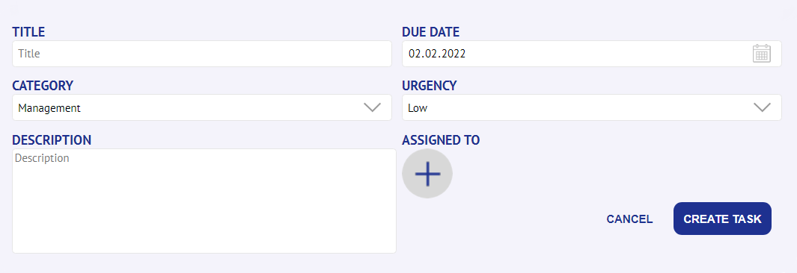
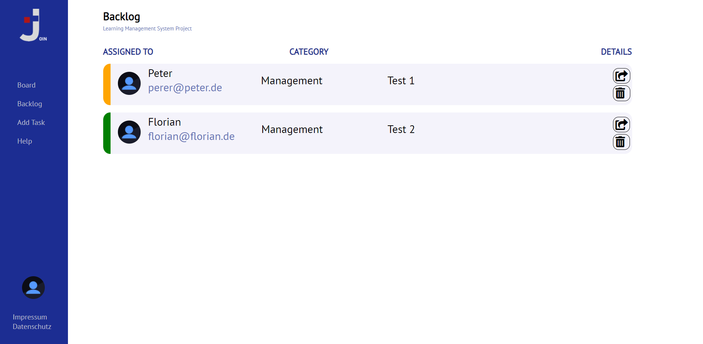
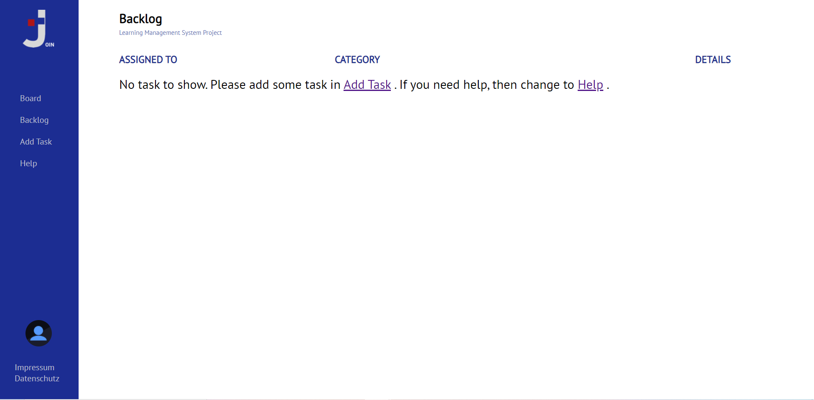
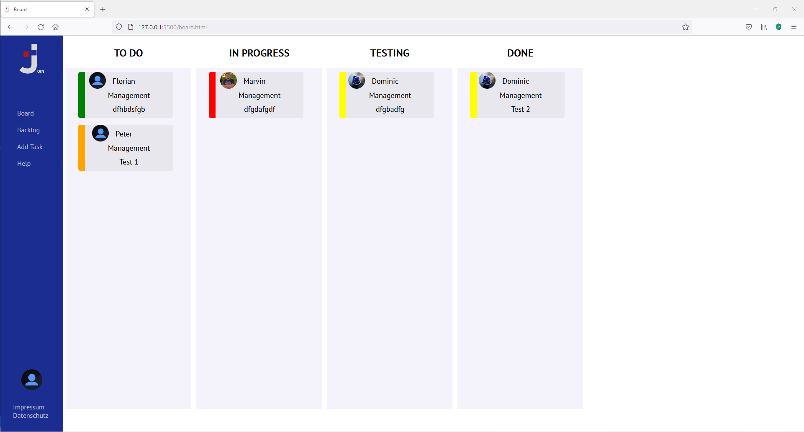

Help
Add Task


To create a new task, please give it a title, due date, category, urgency and a description.
at last click on the + button to assign your task to someone. By clicking on "create task"
your task will be created and the backlog will be opened.
Backlog - filled

The backlog looks like the image on the left if it is filled with tasks. You can no take the
option
to send it to the board or delete it.
Backlog - empty

The backlog looks like the image on the left if there is no task added to backlog or all task
have been updated to the board.
Board

In the board you can see the tasks that have been added from the backlog.
You can simply drag them into the desired column.